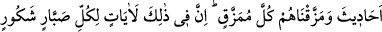

BİZ ANCAK
NANKÖRLERİ CEZALANDIRIRIZ
15. Andolsun, Sebe’ kavminin oturduğu yerlerde büyük bir ibret vardır. Biri
sağda, diğeri solda iki bahçeleri vardı. (Onlara:) “Rabbinizin rızkından yeyin ve
O’na şükredin. İşte güzel bir memleket ve çok bağışlayan bir Rab!” (denilmişti.)
16. Ama onlar yüz çevirdiler. Bu yüzden üzerlerine Arim selini gönderdik.
Onların iki bahçesini, buruk yemişli, acı ılgınlı ve içinde biraz da sedir ağacı bulunan
iki (harap) bahçeye çevirdik.
17. Nankörlük ettikleri için onları böyle cezalandırdık. Biz nankörden başkasını
cezalandırır mıyız!
18. Onların yurdu ile, içlerini bereketlendirdiğimiz memleketler arasında, kolayca
görünen nice kasabalar var ettik ve bunlar arasında yürümeyi konaklara ayırdık.
Oralarda geceleri, gündüzleri korkusuzca gezin dolaşın, dedik.
19. Bunun üzerine: Ey Rabbimiz! Aralarında yolculuk yaptığımız şehirlerin
arasını uzaklaştır, dediler ve kendilerine yazık ettiler. Biz de onları, ibret kıssaları
haline getirdik ve onları büsbütün parçaladık. Şüphesiz bunda, çok sabreden ve çok
şükreden herkes için ibretler vardır.
20. Andolsun İblis, onlar hakkındaki tahminini doğruya çıkardı. İnanan bir
zümrenin dışında hepsi ona uydular.